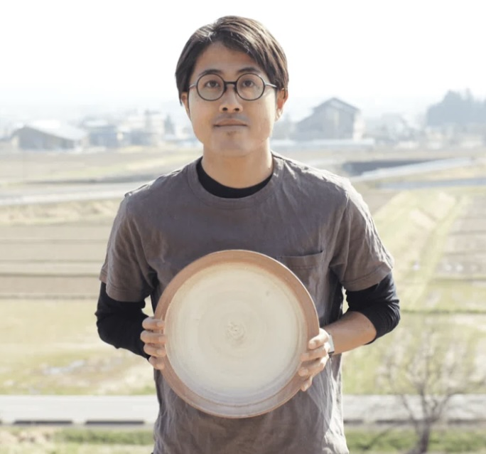
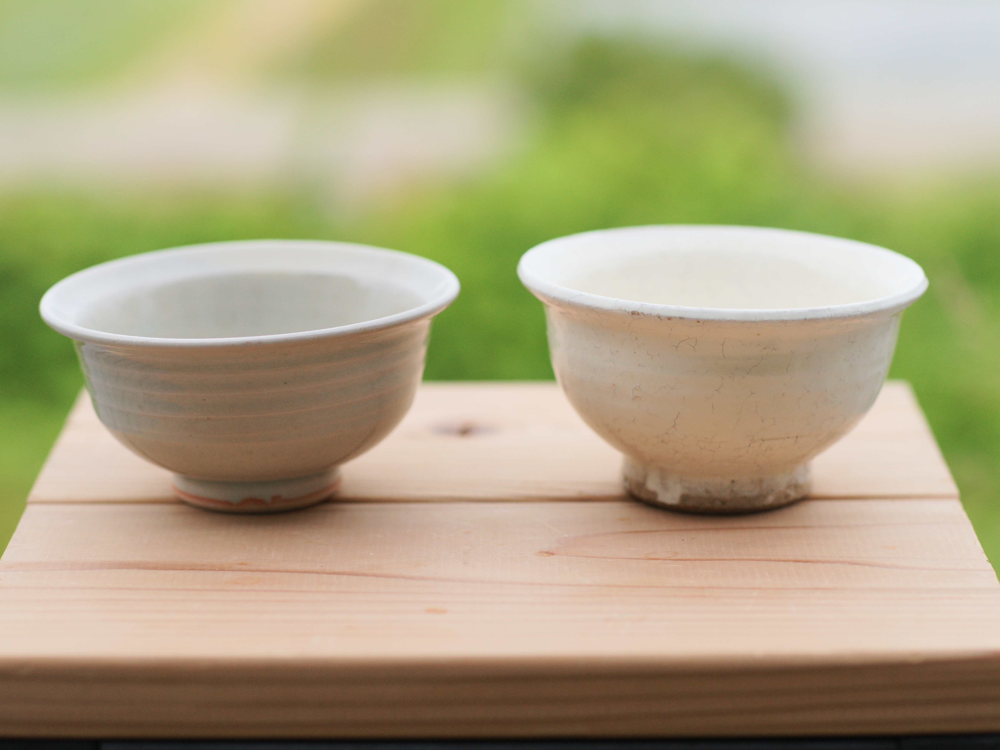
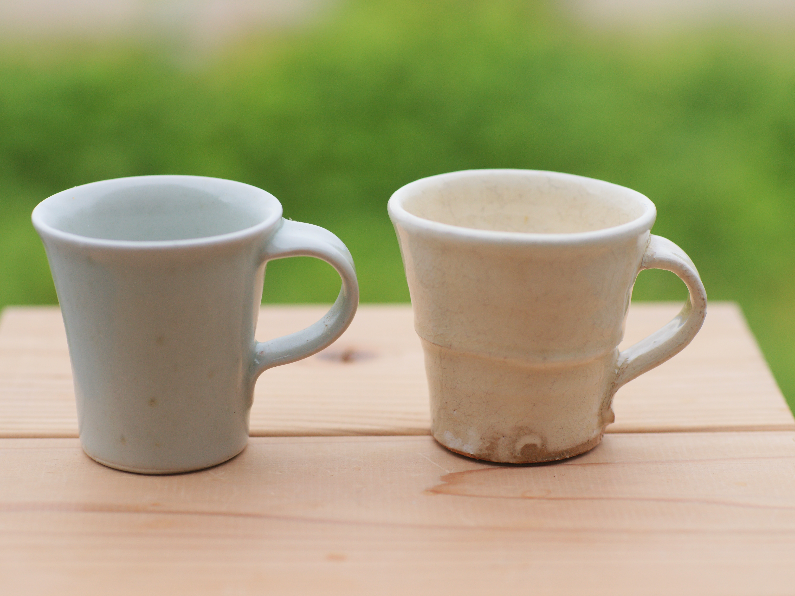
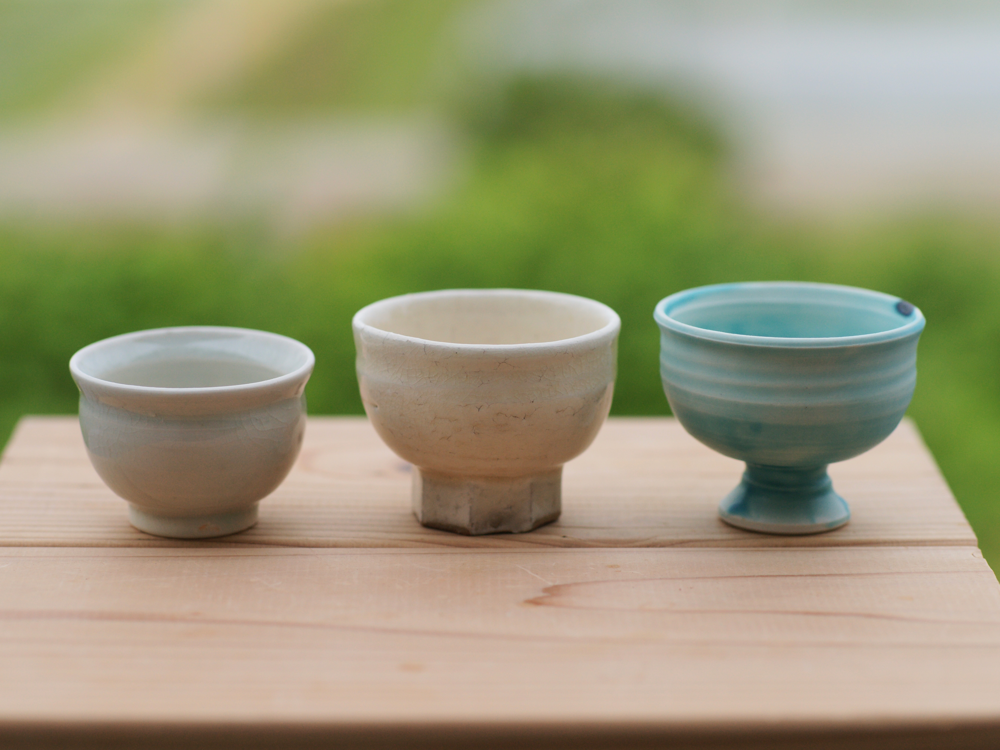
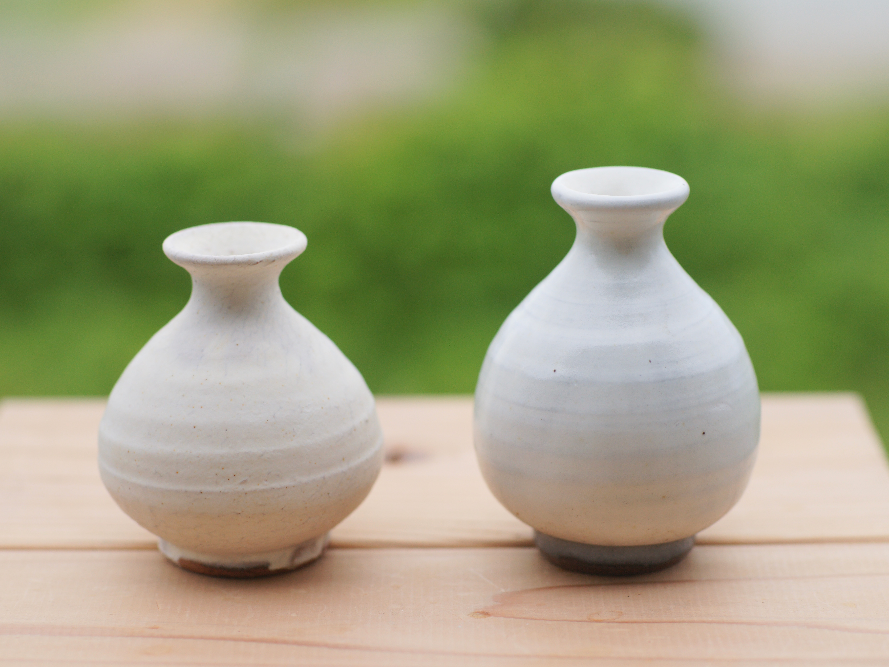
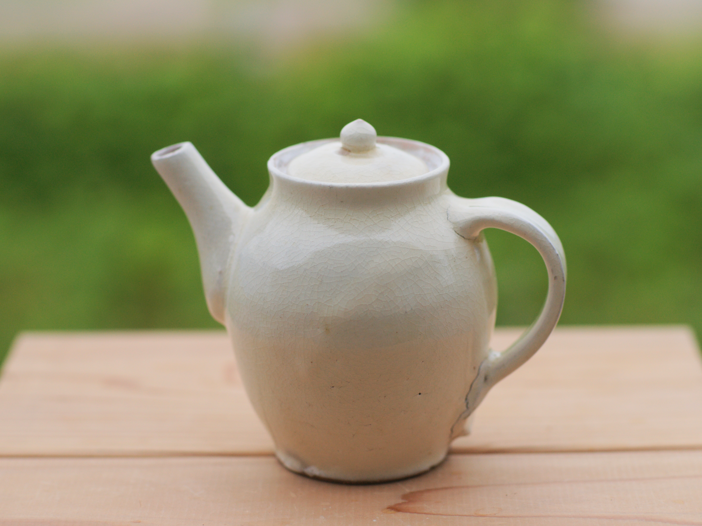
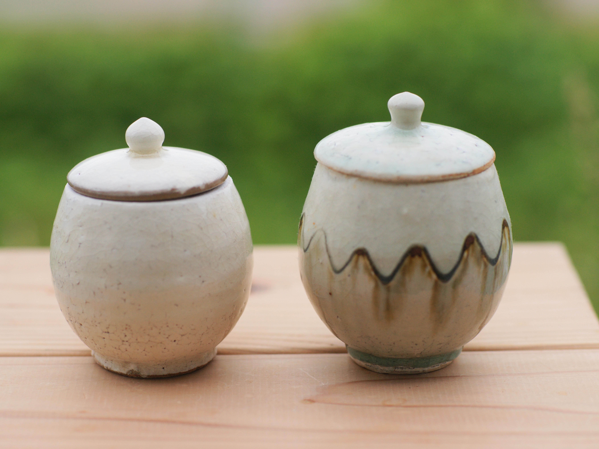
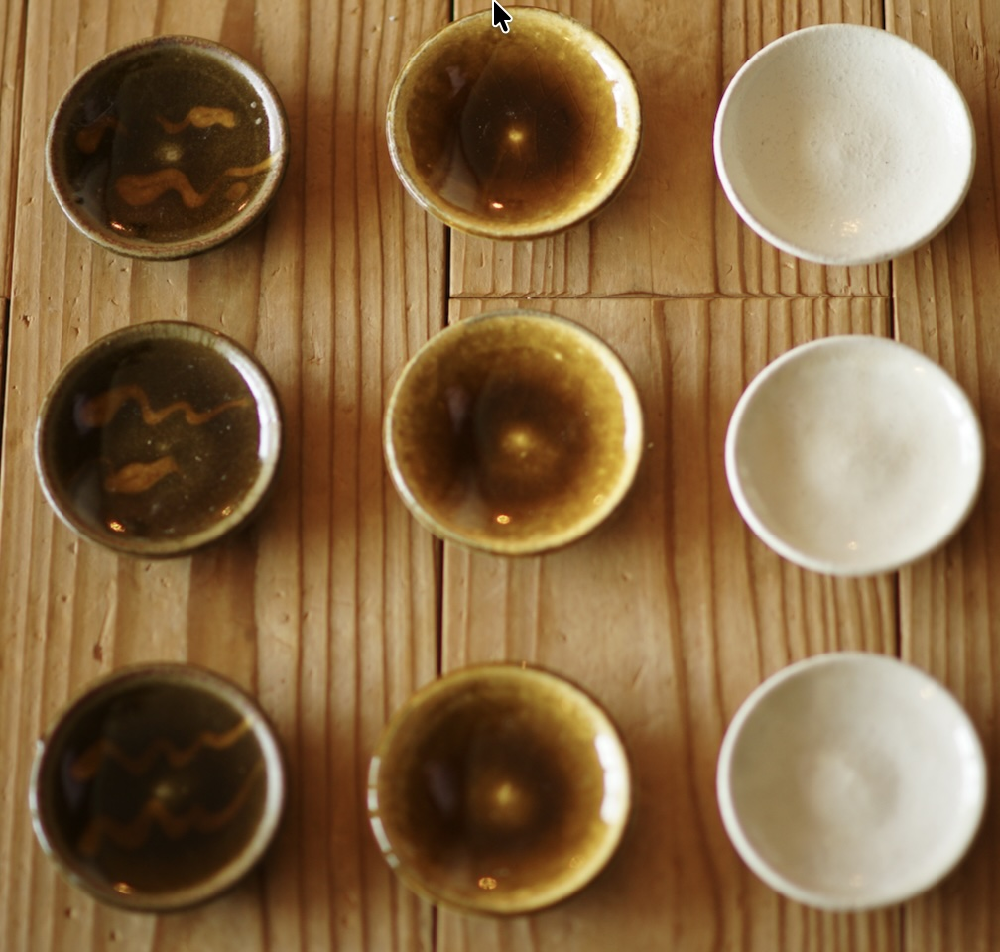
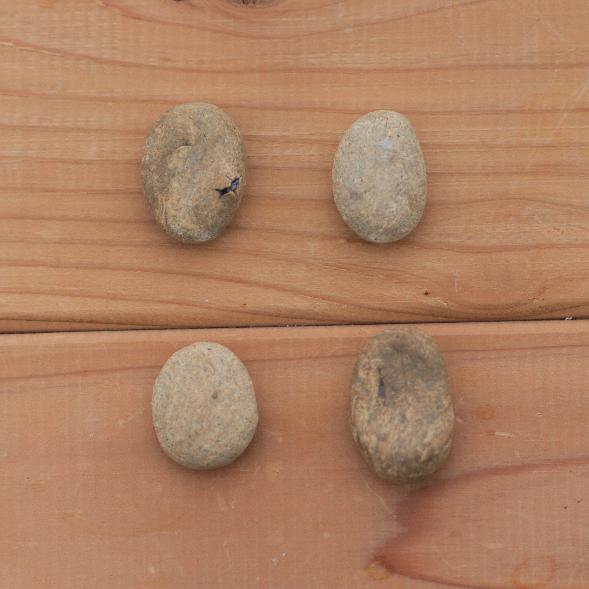

会津で薬局に立つかたわら、土をこねています。
毎日の食卓が、すこし整うような器を。ひとつずつ手づくりで。

平日は薬剤師として、会津の地域薬局に立っています。人の暮らしのいちばん近くで、からだのことを一緒に考える——そんな仕事です。
休みの日は工房で土に向かいます。薬を扱う目で材料を確かめるのが癖になっていて、薪ストーブの灰を釉薬にしてみたり、配合を変えてみたり。うまくいかないことも多いけれど、それも手づくりの味だと思って楽しんでいます。
つくるのは、豆皿や箸置き、飯碗といった、ふだん使いの小さなうつわ。ひとつとして同じものはありません。気軽に手に取ってもらえたら、それがいちばんうれしいです。
薪ストーブの灰から釉薬をつくる。そんな実験も、「材料をきちんと確かめる」という薬剤師の習い性から始まりました。同じ灰でも、季節や焼き方で一つとして同じ色は出ません。そのうつろいごと、楽しんでいます。
※ 画像は仮のイラストです。実物の写真に差し替えてください。








東北最古の焼き物産地・会津美里町（旧本郷町）で開かれる、夏の風物詩。朝4時、まだ薄暗いなか、懐中電灯片手の掘り出し物さがしが始まります。豆皿や箸置き、小さなうつわを並べてお待ちしています。
最新情報をうけとる制作のようすや出品のお知らせは、note やSNSで発信しています。お問い合わせもこちらからどうぞ。